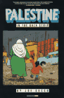
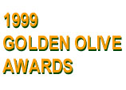
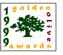

Looking for something to read?
Visit our new section - Recommended Reading on Palestine - and read our reviews and suggestions for your book list. Best of all, order the books at considerable discount from Amazon.com in conjunction with the Complete Guide.
Advertisement: Click here
Part of the
The World-Wide Web Virtual Library
Middle East World-Wide Web Virtual Library
Asian Studies World-Wide Web Virtual Library
what's new?
advertise here


Advertisement: Click here
|


September 1999,
Winners of the 1999 Golden Olive Awards Announced
In some ways the World Wide Web is like all other communications media.
There is more material available about Palestine originating from outside the country than from within it.
In fact, most of the information flow on the Internet travels from the North to the South, reflecting this bias.
In addition, Northern categorisation processes are flawed. For years, visitors to Yahoo!, for example, would have been interested
to
learn that the autonomous Palestinian area of Ramallah was listed as being part of Israel. Yahoo eventually corrected this error.
Mabrook (congratulations) to the search engines Lycos and Excite, and ABC News, all of whom recognise that the West Bank and Gaza Strip are areas that are not part of Israel.
On March 10, 1999, CNN added a Palestinian section to its Middle East "related sites" section. This was after several years of emails questioning the omission of this category. Persistence pays off and CNN is to be commended for this long overdue addition.
The COMPLETE GUIDE TO PALESTINE'S WEBSITES offers Web surfers direct access to categorised reviews of all websites published by individuals and organisations located in Palestine. Get the news from those who live it!
The best of Palestine's websites are awarded a Golden Olive Award. You can see which websites were awarded a 1999 Golden Olive here.
 Palestine-related websites that are not based in Palestine but are otherwise recommended are offered, with brief reviews, at the end of each category section. Both these and local sites are eligible to win a Website of the Month award. Palestine-related websites that are not based in Palestine but are otherwise recommended are offered, with brief reviews, at the end of each category section. Both these and local sites are eligible to win a Website of the Month award.
In April 1999, we added a new section to the Complete Guide, our Recommended Reading on Palestine. Here, you can read reviews of the latest books about Palestine and then order them at considerable discount from Amazon.com through the Complete Guide.
All reviews are dated to encourage user feedback. Write and let us know about good websites that are not listed, or if you find useful information on websites already listed in the COMPLETE GUIDE TO PALESTINE'S WEBSITES.
Finally, visit our sponsors and let them know where you found them: every banner advert that runs for a year brings Birzeit University one new computer! Alternatively, you may wish to advertise your own site. See here for more details.
HELP!
If you are having problems with finding websites, here are some things to do:
- Try looking in a related category. e.g. "academic & research" and "organisations and associations" have some similar entries.
- If you know the name of the website you are looking for, type it directly into the search engine at the top left of the page. Names in Arabic can be transliterated in a number of different ways, e.g. "Bir Zeit" and "Birzeit".
- If a link is broken or your website is not available in the guide, and you are based in the Gaza Strip or West Bank including East Jerusalem, send an e-mail to webmaster@birzeit.edu asking to be added.
|
CATEGORY INDEX:
 home home
page
academic
& research
arts &
culture
business &
economy
government
& services
human
rights
industry &
products
internet &
computers
news &
media
online
memorials
organisations
& associations
personal
homepages
political
parties
schools &
universities
tourist
information
recommended
reading
website of
the month
January 2000:
Palestinian cartoonist, Baha Boukhari's website
golden
olive awards
palestine's
websites at
a glance
palestinian
mailing lists
key peace
process links
israeli
websites
|